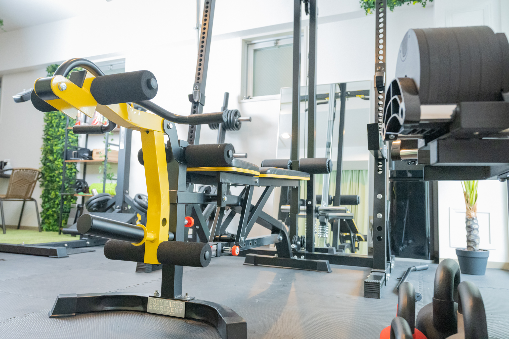

パーソナルジムが続かない人の5つの共通点

「パーソナルジム、また続かなかった...」
これ、私のまわりでも本当によく聞きます。
NEXUSパーソナルジム65店舗のFC開拓を主導してきた立場で、何百人もの「続いた人」「続かなかった人」を見てきました。で、はっきり言えることが一つ。
続かない人には、めちゃくちゃ明確な共通点があります。しかも、入会前の段階で大体予測できる。
今日は、業界の中の人だから言える「続かない人の5パターン」を正直にお話しします。
逆に言えば、この5つを知っていれば、続けられる確率が一気に上がるってことです。
結論から言うと
続かない人の5つの共通点はこれ。
- 「やる気MAX」で入会する
- 目標が「3ヶ月で-10kg」みたいに非現実的
- 通う日時を事前に決めていない
- トレーナーに本音を言えていない
- 生活圏の外のジムを選んでいる
一個ずつ、現場で見てきた話を交えて説明します。
共通点1：「やる気MAX」で入会する
これ、意外に思うかもしれません。
「やる気あるのに、なんで続かないの?」って。
でも65店舗の現場で見てきて、「入会時にやる気MAXの人」ほど、3ヶ月後にいないんですよ。マジで。
なぜか。
やる気MAXの人は、最初の1ヶ月で頑張りすぎるんです。
- 週3回ガッツリ通う
- 毎日食事制限
- 毎晩プロテイン
- SNSにビフォー宣言
で、1ヶ月後にプツッとくる。
「人間のやる気って、ガソリンと同じで使い切ったら無くなる」ってことに、本人は気づいてない。
続いている人は、最初から「めんどくさいな〜と思いながら通ってる」人が多いです。やる気じゃなくて、淡々と続けてる。
正解は、入会時に意図的にペースを抑えること。
「週1からでいいですか?」と最初に確認するくらいがちょうどいいです。
共通点2：目標が非現実的
「3ヶ月で-10kg痩せたいです！」
これ、入会時に半数の方が言います。
で、ほぼ全員、3ヶ月後に達成できてません。
達成できないと、何が起きるか。「私には無理だった」と思って辞めるんです。
実は、30〜40代女性の現実的な達成ラインはこのへんです:
| 期間 | 現実的な減量 | 無理がある減量 |
|---|---|---|
| 1ヶ月 | -1〜2kg | -5kg |
| 3ヶ月 | -3〜5kg | -10kg |
| 6ヶ月 | -5〜8kg | -15kg |
3ヶ月で-3kgでも、見た目はめちゃくちゃ変わります。むしろ-3kgで人生変わったって人、いっぱい見てきました。
続く人の特徴は、「小さい目標を達成し続けてる」こと。
最初から「3ヶ月で-3kg」って決めてた人は、達成して自信つけて、結局1年後に-8kgとかいってます。
正解は、入会時に「現実的な数字」を目標に置くこと。
派手な数字を見せる必要なんてないんです。
共通点3：通う日時を事前に決めていない
これがおそらく最大の落とし穴。
続かない人は、「空いた時に行く」スタイル。
「今週忙しいから来週まとめて行こう」って思って、来週も忙しい。気づいたら3週間行ってない。
続く人は、毎週同じ曜日・同じ時間に通ってます。
例えば「毎週土曜の10時」って決めてる人は、それを生活の固定枠にしてる。ジムが用事じゃなくて、ジムが基準になる。
NEXUSの現場でデータを見てると、「曜日固定」で通う人の継続率は、「都度予約」の人より約2倍高いです。これ、本当に差があります。
正解は、入会時に「毎週◯曜日の◯時に通います」と宣言すること。
体験当日にトレーナーに「この曜日この時間で固定で押さえられますか?」って聞くだけ。
共通点4：トレーナーに本音を言えていない
これは、特に30〜40代女性に多いパターン。
トレーナーから「先週どうでした?」って聞かれて、
「あ、大丈夫でした！」って言っちゃう。
実は:
- 仕事が忙しくて食事管理できなかった
- メニューがきつくて体壊しそうだった
- 子どもの体調不良でストレスたまってた
こういう本音、全部言わずに「大丈夫」で済ませる。
で、無理が積み重なって辞める。
続いてる人は、めちゃくちゃ正直です。
「今週マジで無理でした、ラーメン食べました」って普通に言える。
トレーナーは本音を聞ければ、調整できるんですよ。プログラムを軽くしたり、メニュー変えたり、励まし方を変えたり。本音を言わない=トレーナーが調整できない=合わないメニューが続く=辞める。
正解は、「正直に話せるトレーナー」を体験段階で見抜くこと。
体験で「優しすぎる」「圧が強い」と感じたら、続かない可能性が高いです。本音をフラットに受け止めてくれる人を選んでください。
共通点5：生活圏の外のジムを選んでいる
これがシンプルで、最も強い理由。
「料金がちょっと安いから」「設備が良いから」と、わざわざ遠くのジムを選んだ人。ほぼ続いていないです。
続いてる人を見ると、全員に共通してることがある。
ジムが「行く場所」じゃなくて、「ついでに寄れる場所」になってる。
- 家から帰る途中にある
- 職場から歩いて行ける
- 毎朝通る駅の近く
つまり、わざわざ行かなくていい場所。
人間の「続ける/続けない」は、理性じゃなくて「その日の手間」で決まります。「今日疲れたけど、帰り道だから寄ってくか」はできる。「今日疲れたけど、わざわざ電車乗って行くか」はできない。
これは気合いや根性の問題じゃないです。人間の構造的な問題。
正解は、ジム選びの条件を「家か職場の生活圏内」を絶対条件にすること。
料金が多少高くても、設備がそこそこでも、生活圏内に勝るものはないです。わざわざ遠くに行く必要は、どこにもありません。
まとめ:続く人と続かない人、入会時にもう分かれてる
| 続かない人 | 続く人 |
|---|---|
| やる気MAXで入会 | 「めんどくさいな〜」と思いながら淡々と |
| -10kg目標 | -3kgから |
| 「空いた時に行く」 | 毎週◯曜日固定 |
| トレーナーに「大丈夫です」 | 本音をフラットに話す |
| 安さ・設備で選ぶ | 生活圏内 |
正直に言うと、入会時の選択がほぼ全てです。通い始めてからの努力で挽回できる部分は、思ったより少ない。
逆に言えば、入会時に正しく選んでおけば、続く確率が一気に跳ね上がります。
ジム選びで悩んでる方は、上の5つを意識してみてください。続けられる確率、確実に変わります。
まず、無料体験から確かめてみる。
NEXUSパーソナルジムは、完全個室・マンション一室型。
続く人が選ぶ条件——生活圏内・本音を話せるトレーナー——が揃っています。
まずは無料体験で、自分のペースで通えるかを確かめてください。